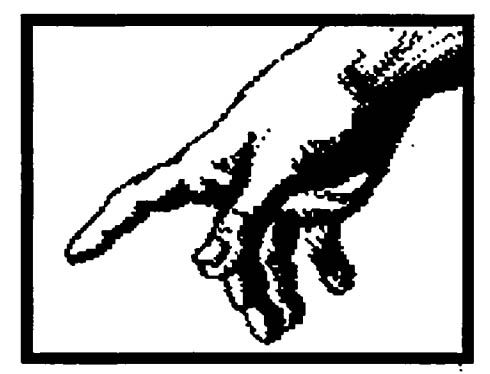
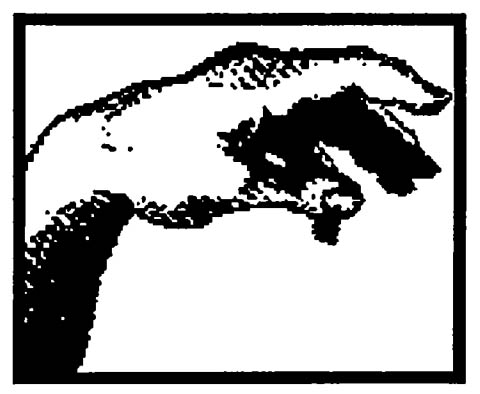

People are becoming increasingly health conscious. Dreams, however, are often overlooked as a potential aid to good health. The following account of a persistent health problem shows how dreams can be called upon to provide continuing health care information.
The situation has a history that begins over twenty years ago when I had my first hangnail infection. A hangnail may sound like a minor problem, but the infection was resistant to medical treatment and led to hospitalization. A surgeon removed the infected tissue including the bone tuft. This procedure was effective, but left me with a smaller fingertip. Years later, a similar infection in another finger was treated on an outpatient basis. The result of this treatment was a healed finger that included a hard, sensitive scar tissuelike projection near the nail. I learned that serious risks accompany traditional medical care of such infections.
On December 1, 1984, I recognized the beginning of another hangnail, this time in the original, slightly shrunken, left index finger. It was during a period of considerable stress. I had left full time employment to complete my doctoral program in psychology. My resistance to infection was down. I was also dealing with the residual effects of flu along with persistent middle ear fluid buildup problems. In the intervening years, however, I had adopted a more wholistic life view and this time decided to take more direct treatment responsibility. I began with a small castor oil-soaked bandage. Castor oil is reported to facilitate the healing process.

The next morning I had the first in a series of dreams related to the finger. The dream confirmed the fact that I had a "hangnail" and would riot be seen as a "good patient" by conventional medical doctors. Several days later, the swelling had Increased and the finger was very sensitive to touch. I wrote in my dream journal, "Help, I'm scared." I feared surgery, a medically accepted treatment of choice. I could imagine what the surgeon would cut now that the bone tuft was gone. I did not want to chance losing more of the finger. Neither did I want the expense, risk, or time away from my academic work that traditional medical care would require. I now actively sought help from my dreams.
I interpreted an unclear dream as an indication I should see a doctor. So, on the next day, December 10th, I saw a doctor. He recommended that I discontinue my castor oil treatment, but continue with epsom salt soaks accompanied by an antibiotic ointment. I followed his advice and added visual imagery exercises to encourage the infection coming to a head, so the doctor could cut the upper skin and release the resulting pus.
A frightening dream came the day after I saw the doctor. In the dream, I took a piece of wood my grandfather handed me and noticed that it had termites in one section. I banged the wood on the ground and watched the termites come out, go Into a pile and then die from exposure. I then smashed the Queen and one other termite. To me, the termites in the wood represented infection in the bone. I knew that bone infections are notoriously resistant to treatment. Fear prevented me from seeing positive aspects of the dream.
I became obsessed with the infection. I got my name added to a prayer group listing. I began calling friends asking for their prayers. One friend, who is especially psychic, called back moments after my call. He had been meditating when I called, returned to the meditative state and asked for advice on my behalf. The recommendation which came to him was accompanied by a brilliant white light. I should use a castor oil pack. I was familiar with castor oil packs and had been using one before the doctor recommended I stop.
I got castor oil soaked wool felt and made a total finger pack which I used with heat for an hour and a half two times a day. My psychic friend called a couple of times during the next two days and mentioned he had also gotten the recommendation that 1 use epsom salt soaks followed by a cleansing with lemon oil; that I would see improvement in from three to six days. I followed this advice, but wasn't sure what form the "improvement" would take. The swelling began to increase and was now accompanied by redness and subsurface yellow pus which began to spread around the base of the nail. Seven worrisome days after my friend's initial recommendation I actively sought dream guidance that I could understand. I awoke with a vague impression of perforation of the skin -the idea that if I found a preparation that would help to draw out the infection at this point, that would be helpful.
The following day, December 18th, I saw the doctor for the second time. He carefully cut the surface layer of skin, drained off the pus and applied antbiotic ointment. The finger improved dramatically. I was more relieved than I had been in days. I was able to reflect on my consuming fears of pain, surgery, and possible failure of my wholistic measures. I got insight regarding how I developed the very fearful side of myself. I realized the powerful impact of fear and toned for situations where I had caused fear in others. I could now relax.
The respite was short lived. Ten days after the doctor's treatment, I dreamed: I saw an index finger with the little flap of skin turned back to expose pus.
I checked my finger carefully and noticed pus around the base of the nail. The infection had come back to life. I resumed ointment and castor oil treatment. I anxiously sought dream information. The resulting dreams indicated a connection between the infection and my overly strong preoccupation with it. It was difficult to reduce my preoccupation since I was constantly reminded of the problem by the ever present protective bandage and the fact that I typed several hours each day. Nevertheless, my finger did improve noticeably. Two months after the onset, it looked healed but was still extremely sensitive and barely sable. I had the doctor check it. He assured me that the finger was fine and that I had healed quickly. I knew the finger was not fine.
The sensitivity continued. Once again, I resumed the castor oil treatments and requested dream guidance. My answering dream included a scene where I got castor oil all over my trousers and could not find anything to wipe it off with - hardly a positive recommendation for continued castor oil use. A few days later a dream made reference to a crayfish biting one of the fingers of my right hand. The possibility of the dream being related to the problems with my left index finger were unclear. Another dream reference occurred a few days later when I dreamed of wrestling with someone "in play, but must be careful of my finger." This last dream was dramatic and revitalized fears for my finger.

The question was, if castor oil were not indicated, then what could I do to provide effective treatment? In desperation I began an intense search for treatment clues that included every medical reference I owned, including: Conn's Therapy, the Merck Manual, and wholistic health sources. As a result of my haH day search, I decided to use lodex, a topical preparation I had never used before. I called a store and reserved a jar, planning to pick it up the next day. That night, my dreams came alive. The following dream on February 19, 1985 was a breakthrough:
I'm looking into a school yard fenced with chain link fence. In a leanto-like shelter are two college friends sitting in a special mud. It is a life experiment! I recalled having difficulty "getting" the name of the mud. Finally I got it - ICHTHYOL.
By the time I was fully awake, I recognized lchthyol as a medication I had react about the day before. I did not associate it with my finger, but thought that the dream was somehow related to my ear problems for which I was also soliciting help from my dreams. I later reread the description, noticed a functional similarity to lodex, and then made the connection. As indicated in the dream, it was difficult "to get." lchthyol is the trade name of a discontinued product - a drawing salve. I did locate the medication under its generic name, ichthammol, and began using it immediately. Surprise! It smelled and looked like mud. I was fascinated and read more about it. The descriptions warned about becoming reliant on such preparations. I slowed down my use of the product. A dream responded by pointing out the spiritual nature of dream guidance and its relevence to my current problem. I resumed full use of the ichthammol.
Three months after the first indication of a problem, I was shocked by the following dream's power and lightning fast action.
I'm the lead character on stage in a play. The fellow who designed the play pushed a sword through my lapel and on through my finger. Just as quickly, he withdrew it. I looked down and was surprised to see that it didn't hurt. He had done it expertly. later, I looked at the wound. Each opening had healed, although of course it was still healing inside. I thought about putting salt water on it, but didn't think it needed it.
My immediate reaction was: IT WAS A CLEAN CUT. THE FINGER WAS HEALED.
In my joy of realizing the infection was gone, I neglected the statements about continued healing and salt water. Continued finger stiffness renewed my concerns. On March 14, 1985, came the last dream of the series; simply an impression that all the finger needed was exercise. Careful exercise soon brought my finger back to full use.
Overlooked dream clues and encouragement became apparent in a later review of the log. The critical use of a drawing salve in the Jast phases of treatment was indicated by a couple of early dreams. The reference to my grandfather was undoubtedly related to his frequent use of a "drawing salve" as treatment for job-related metal splinters. Another dream referred to a "preparation that would help draw out the infection" long before the mud experiment dream. Other uninterpretted symbols undoubtedly hold a wealth of untapped information. Dreams clearly played a helpful, dynamic andmultifaceted role in the entire healing process.